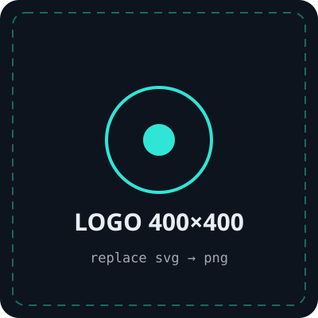

MARKUP
HTML5 + plain links
Five static pages connected with <a href>. No router,
no bundler, no build step.
Colophon
Every library pinned, every asset either procedural or a placeholder, and a list of the datasets and prior work the research stands on.

MARKUP
Five static pages connected with <a href>. No router,
no bundler, no build step.
STYLING
Loaded from the browser build, with the palette declared in an
@theme block so utilities and custom properties agree.
3D
Procedural car, road, lidar sweep and detector boxes, plus bloom, film grain, vignette and chromatic aberration. No models downloaded.
MOTION
The hero camera timeline, staggered heading reveals, parallax figures and the reading-progress hairline. All eased, never linear.
SCROLL
Smooth scrolling wired into ScrollTrigger's update cycle, and switched off entirely when reduced motion is requested.
TYPE
Space Grotesk for display, Inter for body copy, IBM Plex Mono for data and HUD readouts.
Data
Large-scale dashcam video with diverse weather, time of day and locations. Used for real-world frames and for their published object-detection annotations.
Open autonomous driving simulator. Provides exact ground truth, scriptable weather (fog density, wetness, lighting) and repeatable scenarios for sweeping conditions systematically.
Prior work
Replace these bullets with your formal citation list (authors, title, year, link) when the write-up is final.
Engineering notes
PERFORMANCE
Device pixel ratio capped at 2 (1.6 on phones), one InstancedMesh for all lane dashes, particles reduced on small screens, rendering paused when the tab is hidden or the hero scrolls away, and every GPU resource disposed on unload.
RESILIENCE
No WebGL → an explanatory panel stays put. No GSAP → the scene shows a still frame that still tells the story. Blocked CDN → content and structure survive. Reveal animations force-reveal after 2.5s so nothing can get stuck invisible.
PROCEDURAL
The car, road, environment reflections, dash texture and detector labels are all generated at runtime from primitives and canvases — so the demo stays small, loads fast and has no asset licences to worry about.
AEGIS-PX is a research prototype built as a high-school independent research project. It is not production software, has not been tested for real-world deployment, and carries no safety certification. Do not use it to make decisions about a real vehicle, and do not read the figures on this site as certified performance.